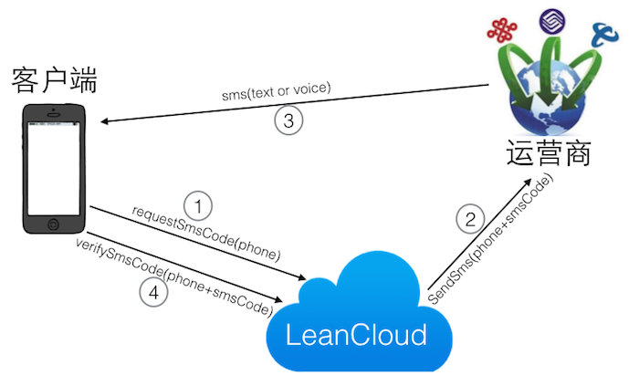
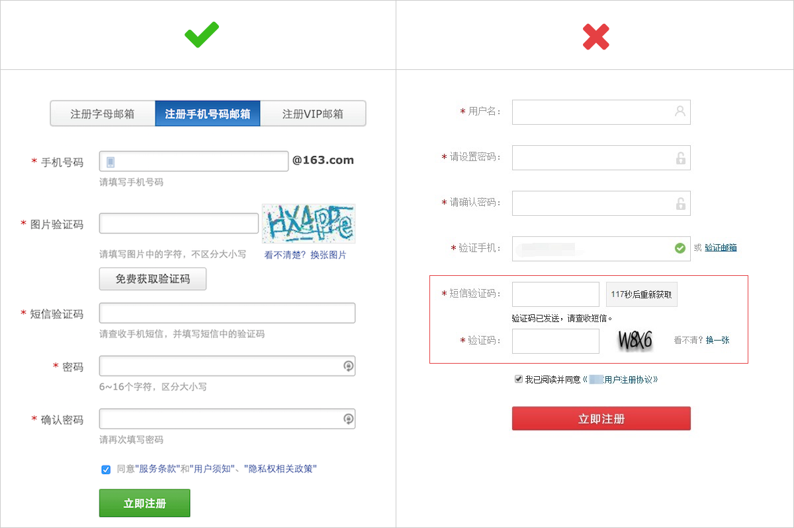
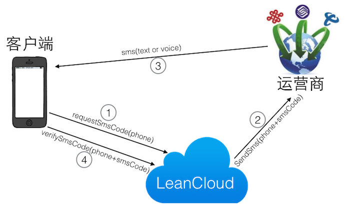
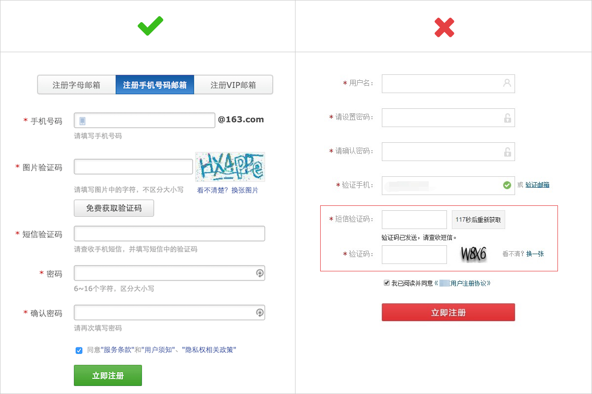

REST API 可以让任何支持发送 HTTP 请求的设备与 LeanCloud 进行交互。使用我们的短信服务 REST API 可以完成很多事情，比如：
我们为每个 LeanCloud 账户提供 100 条国内短信的免费额度进行测试，超过的部分将实时从短信余额中扣除，所以请务必保证短信账户余额充足。具体的价格请参看 官网价格。
所有 API 访问都需要使用 HTTPS 协议，在 https://leancloud.cn 域名下。相对路径前缀 /1.1/ 代表使用版本号为 1.1 的 API。如需在线测试 API，请在浏览器中打开 https://leancloud.cn/apionline/。
https://leancloud.cn
/1.1/
我们的短信服务 REST API 包括：
<code>
请参考我们的 REST API 总览文档。
在短信验证码发送过程中，一共有三方参与：客户端、LeanCloud 和电信运营商（移动、联通、电信），发送、验证短信验证码的过程如下图所示：

在一些场景下，你可能希望用户在验证手机号码后才能进行一些操作，例如充值。这些操作跟账户系统没有关系，可以通过我们提供的的短信验证 API 来实现。
使用这些 API 需要在 控制台 > 设置 > 应用选项 > 其他 中开启 启用通用的短信验证码服务（开放 requestSmsCode 和 verifySmsCode 接口） 选项。
requestSmsCode
verifySmsCode
给某个手机号码发送验证短信：
curl -X POST \ -H "X-LC-Id: {{appid}}" \ -H "X-LC-Key: {{appkey}}" \ -H "Content-Type: application/json" \ -d '{"mobilePhoneNumber": "186xxxxxxxx"}' \ https://api.leancloud.cn/1.1/requestSmsCode
这里必须使用 POST 方式来发送请求，请求体里支持的参数有：
假设有如下调用：
curl -X POST \ -H "X-LC-Id: {{appid}}" \ -H "X-LC-Key: {{appkey}}" \ -H "Content-Type: application/json" \ -d '{"mobilePhoneNumber": "186xxxxxxxx","ttl":"5","name":"天东商城","op":"付款"}' \ https://api.leancloud.cn/1.1/requestSmsCode
接收到的短信内容如下：
您正在使用 天东商城 服务进行 付款 操作，您的验证码是：123456，请在 5 分钟内完成验证。
语音验证码，是通过电话直接呼叫用户的电话号码来播报验证码。它是一个 6 位的数字组合，语音只播报数字内容，不能添加其他任何内容。它可以作为一种备选方案，来解决因各种原因导致短信无法及时到达的问题。发送方式如下：
curl -X POST \ -H "X-LC-Id: {{appid}}" \ -H "X-LC-Key: {{appkey}}" \ -H "Content-Type: application/json" \ -d '{"mobilePhoneNumber": "186xxxxxxxx", "smsType":"voice"}' \ https://api.leancloud.cn/1.1/requestSmsCode
与上面的普通短信验证码相比，请求发送语音验证码的时候，要加上 smsType 这个请求参数，其值为 voice。
smsType
voice
smsType 允许的取值有：
此接口与之前的 验证短信 API 完全兼容，如果你不需要此服务，完全不需要修改之前的发送短信代码。它的 发送限制 与短信验证码相同。
通过下面的 API 可以验证收到的 6 位数字验证码是否正确：
curl -X POST \ -H "X-LC-Id: {{appid}}" \ -H "X-LC-Key: {{appkey}}" \ -H "Content-Type: application/json" \ "https://api.leancloud.cn/1.1/verifySmsCode/6位数字验证码?mobilePhoneNumber=186xxxxxxxx"
其中 verifySmsCode 后面是手机收到的 6 位数字验证码。mobilePhoneNumber 是收到短信的手机号码。
mobilePhoneNumber
由于运营商和渠道的限制，短信验证码（也包括语音验证码）向同一手机号码发送要求间隔至少一分钟，并且每天向同一手机号码发送次数不能超过 5 次，因此建议采用 图片验证码、倒数计时等措施来控制频率，提示用户，防止短信轰炸等恶劣情况发生。另外，请了解有关短信的 其他限制。
我们还支持通过 requestSmsCode 发送自定义模板的短信。短信模板可以在 应用控制台 > 消息 > 短信 > 设置 > 短信模板 里创建。
要使用已创建好的短信模板来发送短信验证，可以通过 template 参数指定模板名称，并且可以传入变量渲染模板，比如下面例子中的 date：
template
date
curl -X POST \ -H "X-LC-Id: {{appid}}" \ -H "X-LC-Key: {{appkey}}" \ -H "Content-Type: application/json" \ -d '{"mobilePhoneNumber": "186xxxxxxxx", "template":"activity","date":"2014 年 10 月 31 号"}' \ https://api.leancloud.cn/1.1/requestSmsCode
短信模板的语法遵循 Handlebars，举例如下：
Hi , 欢迎注册应用，您可以通过验证码:，进行注册。本条短信将在分钟后自行销毁。请尽快使用。 以上。
/1.1/verifySmsCode/<code>
这三个内置字段会自动填充，你当然也可以添加自定义变量，形如 ``。
短信签名是指短信内容里 【】 括起来的短信发送方名称，如果没有明确在模板里指定，默认就是你的应用名称。短信签名必须是 3 到 8 个字符，不能有任何非文字字符，也不可以是变量。应用名称可以在应用设置里修改，并且短信签名必须出现在短信内容的开头或者结尾。
【】
模板的创建和修改都需要审核，并且在创建或修改模板之时，短信账户至少有 200 元的非赠送余额。创建后的模板会被自动提交进行审核，审核结果将通过邮件的形式发送到你的账号邮箱。
目前我们仅允许两类自定义短信：
即内容中不允许包含任何下载链接，以及推广营销类信息，否则，模板将无法通过审核。
每个应用限制创建 10 个模板，并且每个模板都需要经过审核才可以使用（审核在工作时间内通常在 1 个小时内）。模板一经审核，就可以马上使用。后续你可以创建同名模板来替换当前使用的模板，新模板也同样需要审核。审核通过，即可替换旧模板。
LeanCloud 提供了内建的账户系统，方便开发者快速接入。我们也支持账户系统与手机号码绑定的一系列功能，譬如：
用户直接输入手机号码来注册账户，如果手机号码已存在则自动登录。POST /usersByMobilePhone 既用于注册也用于登录：
POST /usersByMobilePhone
curl -X POST \ -H "X-LC-Id: {{appid}}" \ -H "X-LC-Key: {{appkey}}" \ -H "Content-Type: application/json" \ -d '{"mobilePhoneNumber":"186xxxxxxxx","smsCode":"123456"}' \ https://api.leancloud.cn/1.1/usersByMobilePhone
其中 mobilePhoneNumber 是手机号码，smsCode 是使用 短信验证 API 发送到手机上的 6 位验证码字符串。如果不传入 username，默认用户名将是手机号码。
smsCode
username
注册或者登录成功后，返回的应答与登录接口相似：
{ "username": "186xxxxxxxx", "mobilePhone": "186xxxxxxxx", "createdAt": "2014-11-07T20:58:34.448Z", "updatedAt": "2014-11-07T20:58:34.448Z", "objectId": "51c3ba66e4b0f0e851c1621b", "sessionToken": "pnktnjyb996sj4p156gjtp4im", ... 其他属性 }
如果是第一次注册，将默认设置 mobilePhoneVerified 属性为 true。
mobilePhoneVerified
true
使用手机验证码注册时，并不需要传入密码 password，云端也会默认使用空密码，代表不可以用密码来登录。如果需要在注册的同时设置一个密码，则增加传入 password 参数即可：
password
curl -X POST \ -H "X-LC-Id: xxxx" \ -H "X-LC-Key: xxxx" \ -H "Content-Type: application/json" \ -d '{"mobilePhoneNumber":"186xxxxxxxx","smsCode":"123456", "password": "密码"}' \ https://api.leancloud.cn/1.1/usersByMobilePhone
password 这个参数只在注册时起作用，如果是登录则会被忽略。
在应用控制台的设置里，你还可以选择开启注册手机码号验证。这样当用户在注册时填写了 mobilePhoneNumber 字段， LeanCloud 会向该手机号码发送一条附带验证码的验证短信，用户在输入验证码后被 LeanCloud API 验证通过后，用户的 mobilePhoneNumberVerified 属性即被设置为 true。
mobilePhoneNumberVerified
假设你在开启注册手机号码验证选项后，注册下列用户：
curl -X POST \ -H "X-LC-Id: {{appid}}" \ -H "X-LC-Key: {{appkey}}" \ -H "Content-Type: application/json" \ -d '{"username":"cooldude6","password":"p_n7!-e8","mobilePhoneNumber":"186xxxxxxxx"}' \ https://api.leancloud.cn/1.1/users
那么在注册成功后，LeanCloud 将向 186xxxxxxxx 发送一条验证短信。开发者需要提供一个输入框让用户输入这个验证短信中附带的验证码，之后调用下列 API 来确认验证码的有效性：
curl -X POST \ -H "X-LC-Id: {{appid}}" \ -H "X-LC-Key: {{appkey}}" \ -H "Content-Type: application/json" \ -d '{}' \ https://api.leancloud.cn/1.1/verifyMobilePhone/<code>
其中 URL 中最后的 <code> 要替换成 6 位验证数字。
验证成功后，用户的 mobilePhoneNumberVerified 将变为 true，并会触发调用云引擎的 AV.Cloud.onVerified(type, function) 方法，type 被设置为 sms。
AV.Cloud.onVerified(type, function)
type
sms
用户除了被动等待接收验证码短信之外，或者因为其他情况用户没有收到短信，此时开发者可以主动要求发送验证码短信：
curl -X POST \ -H "X-LC-Id: {{appid}}" \ -H "X-LC-Key: {{appkey}}" \ -H "Content-Type: application/json" \ -d '{"mobilePhoneNumber": "186xxxxxxxx"}' \ https://api.leancloud.cn/1.1/requestMobilePhoneVerify
在验证过手机号码后，用户可以采用短信验证码登录，来避免繁琐的输入密码的过程，请求发送登录验证码：
curl -X POST \ -H "X-LC-Id: {{appid}}" \ -H "X-LC-Key: {{appkey}}" \ -H "Content-Type: application/json" \ -d '{"mobilePhoneNumber": "186xxxxxxxx"}' \ https://api.leancloud.cn/1.1/requestLoginSmsCode
用户收到验证码短信后，输入手机号码和该验证码来登录应用：
curl -X GET \ -H "X-LC-Id: {{appid}}" \ -H "X-LC-Key: {{appkey}}" \ -G \ --data-urlencode 'mobilePhoneNumber=186xxxxxxxx' \ --data-urlencode 'smsCode=123456' \ https://api.leancloud.cn/1.1/login
也可以采用手机号码和密码的方式登录：
curl -X GET \ -H "X-LC-Id: {{appid}}" \ -H "X-LC-Key: {{appkey}}" \ -G \ --data-urlencode 'mobilePhoneNumber=186xxxxxxxx' \ --data-urlencode 'password=p_n7!-e8' \ https://api.leancloud.cn/1.1/login
如果用户使用了手机号码来注册，你就可以通过手机短信来实现「忘记密码」的功能：
curl -X POST \ -H "X-LC-Id: {{appid}}" \ -H "X-LC-Key: {{appkey}}" \ -H "Content-Type: application/json" \ -d '{"mobilePhoneNumber": "186xxxxxxxx"}' \ https://api.leancloud.cn/1.1/requestPasswordResetBySmsCode
发送一条重置密码的短信验证码到注册用户的手机上，需要传入注册时候的 mobilePhoneNumber。
用户收到验证码后，调用 PUT /1.1/resetPasswordBySmsCode/<code> 来设置新的密码（其中 URL 中的 <code> 就是 6 位验证数字）：
PUT /1.1/resetPasswordBySmsCode/<code>
curl -X PUT \ -H "X-LC-Id: {{appid}}" \ -H "X-LC-Key: {{appkey}}" \ -H "Content-Type: application/json" \ -d '{"password": "<新密码>"}' \ https://api.leancloud.cn/1.1/resetPasswordBySmsCode/收到的6位验证码
修改成功后，用户就可以用新密码登录了。
网络世界也不太平，很多角落都可能存在着不法分子，肆意进行网络攻击和破坏，其中短信轰炸就是一例。
网络上有这样一种「轰炸软件」，它可以自动收集一些不需要认证（如图片验证码认证）就能发送短信验证码的网站，当恶意攻击者随意提供一个或一组手机号码，它就逐个访问先前找到的那些网站，把手机号都自动填上，利用这些网站向指定手机号发送短信。轰炸软件找到的可利用的网站越多，发出的短信也就越多。
轰炸软件的恶意之处还在于，它对各个网站提交发送短信验证码请求不仅仅是一次，它可以设置时间，比如每隔几分钟请求一次，24 小时不间断请求，这样造成的后果就是：
毫无疑问，图片验证码（又称 captcha）是防范短信轰炸最有力的手段。比如，我们在一些网站注册的时候，经常需要填写以下图片的信息：
网站只有在用户进行「免费获取验证码」 操作前，要求用户先输入图片验证码来确认操作真实有效，服务器端再请求 LeanCloud 云端发送动态短信到用户手机上，这样才可以有效防范恶意攻击者。下图显示出使用图片验证码的正确和错误做法：

所以，在短信验证码发送前，一定先让用户填写图片验证码，确认后再发送短信验证码。
一个实际有效的验证码还必须满足：
以下网站使用了图片验证码，大家可以参考：
除了采用这种图片输入的方式来验证，现在有很多网站也采用了新颖的验证方式，比如淘宝、pptv 在注册时采用行为验证方式、拖拽验证方式等等。大家可以去搜索一下，网上有一些图片验证码的现成解决方案，可以尝试。
短信有 验证（包括语音验证）和通知（如通过短信模板创建）两类。由于运营商和渠道的限制，短信发送要遵循以下原则：
通知类短信内容如果涉及以下不正当用途，我们将停止你的短信使用权限：
以上限制对测试手机号码也同样有效。
每个 LeanCloud 账户拥有 100 条免费的短信测试额度，不是每个应用；使用完毕就需要付费。可以通过 充值 菜单来购买短信。
注意：为了不影响其他服务的使用，我们将短信费用和普通服务费用分开计算，所以充值的时候请明确选择「购买短信」，万一充错了，我们也支持用账户余额来购买短信。
我们通过接入多个短信提供商来提升普通短信的到达率。从我们实际使用来看，整体的到达率在 97%~98% 之间。为了保证重要操作的验证信息可以 100% 送达，我们也推出了 语音验证码 服务，即短信内容通过语音电话直接发送。因此，除了普通的文本短信之外，还可以使用语音短信或者其他备份手段来向确保将通知送达用户。
LeanCloud 通过运营商通道发送的每一条短信，都可以通过「接收回执」来确认发送结果。一般有三种状态：
大家可以从 控制台 > 消息 > 短信 > 发送记录 清楚地看到每条消息和它的发送状态。
首先请检查 控制台 > 消息 > 短信 > 发送记录）有无发送数据。如果没有，请检查 API 的报错，根据报错修改客户端代码或逻辑；如果有数据，依然收不到短信，则可能有如下原因：
短信发送受客观因素或政策原因影响较多，没有一个通道可以保证 100% 送达。LeanCloud 短信服务通过对接多条通道、动态智能匹配最优线路，能够保证 97% 以上的到达率。
如果需要详查原因，请将 appId 及手机号发送到 support@leancloud.cn，我们联系运营商查询详情。
根据运营商的要求，短信签名是必须的。具体请参考 短信签名说明。
如果你创建的短信模板被拒绝，请注意查收邮件，查看里面的拒绝原因等。如果还有疑问，请及时与我们联系。
支持，请参考 短信服务覆盖的国家和地区。
有。请在 开发者账户 里填写手机号码，我们将提前通过邮件和短信的方式向你发送告警信息。
短信服务 REST API 详解
REST API 可以让任何支持发送 HTTP 请求的设备与 LeanCloud 进行交互。使用我们的短信服务 REST API 可以完成很多事情，比如：
我们为每个 LeanCloud 账户提供 100 条国内短信的免费额度进行测试，超过的部分将实时从短信余额中扣除，所以请务必保证短信账户余额充足。具体的价格请参看 官网价格。
快速参考
所有 API 访问都需要使用 HTTPS 协议，在
https://leancloud.cn域名下。相对路径前缀/1.1/代表使用版本号为 1.1 的 API。如需在线测试 API，请在浏览器中打开 https://leancloud.cn/apionline/。我们的短信服务 REST API 包括：
短信验证 API
<code>用户
<code><code>请求和响应格式
请参考我们的 REST API 总览文档。
验证码发送逻辑图
在短信验证码发送过程中，一共有三方参与：客户端、LeanCloud 和电信运营商（移动、联通、电信），发送、验证短信验证码的过程如下图所示：

短信验证 API
在一些场景下，你可能希望用户在验证手机号码后才能进行一些操作，例如充值。这些操作跟账户系统没有关系，可以通过我们提供的的短信验证 API 来实现。
使用这些 API 需要在 控制台 > 设置 > 应用选项 > 其他 中开启 启用通用的短信验证码服务（开放
requestSmsCode和verifySmsCode接口） 选项。给某个手机号码发送验证短信：
这里必须使用 POST 方式来发送请求，请求体里支持的参数有：
假设有如下调用：
接收到的短信内容如下：
您正在使用 天东商城 服务进行 付款 操作，您的验证码是：123456，请在 5 分钟内完成验证。
语音验证码
语音验证码，是通过电话直接呼叫用户的电话号码来播报验证码。它是一个 6 位的数字组合，语音只播报数字内容，不能添加其他任何内容。它可以作为一种备选方案，来解决因各种原因导致短信无法及时到达的问题。发送方式如下：
与上面的普通短信验证码相比，请求发送语音验证码的时候，要加上
smsType这个请求参数，其值为voice。smsType允许的取值有：此接口与之前的 验证短信 API 完全兼容，如果你不需要此服务，完全不需要修改之前的发送短信代码。它的 发送限制 与短信验证码相同。
校验验证码
通过下面的 API 可以验证收到的 6 位数字验证码是否正确：
其中
verifySmsCode后面是手机收到的 6 位数字验证码。mobilePhoneNumber是收到短信的手机号码。自定义短信模板
我们还支持通过
requestSmsCode发送自定义模板的短信。短信模板可以在 应用控制台 > 消息 > 短信 > 设置 > 短信模板 里创建。要使用已创建好的短信模板来发送短信验证，可以通过
template参数指定模板名称，并且可以传入变量渲染模板，比如下面例子中的date：短信模板的语法遵循 Handlebars，举例如下：
/1.1/verifySmsCode/<code>校验。这三个内置字段会自动填充，你当然也可以添加自定义变量，形如 ``。
短信签名是指短信内容里
【】括起来的短信发送方名称，如果没有明确在模板里指定，默认就是你的应用名称。短信签名必须是 3 到 8 个字符，不能有任何非文字字符，也不可以是变量。应用名称可以在应用设置里修改，并且短信签名必须出现在短信内容的开头或者结尾。短信模板审核
模板的创建和修改都需要审核，并且在创建或修改模板之时，短信账户至少有 200 元的非赠送余额。创建后的模板会被自动提交进行审核，审核结果将通过邮件的形式发送到你的账号邮箱。
目前我们仅允许两类自定义短信：
即内容中不允许包含任何下载链接，以及推广营销类信息，否则，模板将无法通过审核。
每个应用限制创建 10 个模板，并且每个模板都需要经过审核才可以使用（审核在工作时间内通常在 1 个小时内）。模板一经审核，就可以马上使用。后续你可以创建同名模板来替换当前使用的模板，新模板也同样需要审核。审核通过，即可替换旧模板。
用户账户与手机号码验证
LeanCloud 提供了内建的账户系统，方便开发者快速接入。我们也支持账户系统与手机号码绑定的一系列功能，譬如：
使用手机号码注册或登录
用户直接输入手机号码来注册账户，如果手机号码已存在则自动登录。
POST /usersByMobilePhone既用于注册也用于登录：其中
mobilePhoneNumber是手机号码，smsCode是使用 短信验证 API 发送到手机上的 6 位验证码字符串。如果不传入username，默认用户名将是手机号码。注册或者登录成功后，返回的应答与登录接口相似：
如果是第一次注册，将默认设置
mobilePhoneVerified属性为true。使用手机验证码注册时，并不需要传入密码
password，云端也会默认使用空密码，代表不可以用密码来登录。如果需要在注册的同时设置一个密码，则增加传入password参数即可：password这个参数只在注册时起作用，如果是登录则会被忽略。手机号码验证
在应用控制台的设置里，你还可以选择开启注册手机码号验证。这样当用户在注册时填写了
mobilePhoneNumber字段， LeanCloud 会向该手机号码发送一条附带验证码的验证短信，用户在输入验证码后被 LeanCloud API 验证通过后，用户的mobilePhoneNumberVerified属性即被设置为true。假设你在开启注册手机号码验证选项后，注册下列用户：
那么在注册成功后，LeanCloud 将向 186xxxxxxxx 发送一条验证短信。开发者需要提供一个输入框让用户输入这个验证短信中附带的验证码，之后调用下列 API 来确认验证码的有效性：
其中 URL 中最后的
<code>要替换成 6 位验证数字。验证成功后，用户的
mobilePhoneNumberVerified将变为true，并会触发调用云引擎的AV.Cloud.onVerified(type, function)方法，type被设置为sms。请求手机号码验证
用户除了被动等待接收验证码短信之外，或者因为其他情况用户没有收到短信，此时开发者可以主动要求发送验证码短信：
手机号码＋验证码登录
在验证过手机号码后，用户可以采用短信验证码登录，来避免繁琐的输入密码的过程，请求发送登录验证码：
用户收到验证码短信后，输入手机号码和该验证码来登录应用：
也可以采用手机号码和密码的方式登录：
手机号码＋验证码重置用户密码
如果用户使用了手机号码来注册，你就可以通过手机短信来实现「忘记密码」的功能：
发送一条重置密码的短信验证码到注册用户的手机上，需要传入注册时候的
mobilePhoneNumber。用户收到验证码后，调用
PUT /1.1/resetPasswordBySmsCode/<code>来设置新的密码（其中 URL 中的<code>就是 6 位验证数字）：修改成功后，用户就可以用新密码登录了。
图片验证码
短信轰炸
网络世界也不太平，很多角落都可能存在着不法分子，肆意进行网络攻击和破坏，其中短信轰炸就是一例。
网络上有这样一种「轰炸软件」，它可以自动收集一些不需要认证（如图片验证码认证）就能发送短信验证码的网站，当恶意攻击者随意提供一个或一组手机号码，它就逐个访问先前找到的那些网站，把手机号都自动填上，利用这些网站向指定手机号发送短信。轰炸软件找到的可利用的网站越多，发出的短信也就越多。
轰炸软件的恶意之处还在于，它对各个网站提交发送短信验证码请求不仅仅是一次，它可以设置时间，比如每隔几分钟请求一次，24 小时不间断请求，这样造成的后果就是：
防范的重要性
毫无疑问，图片验证码（又称 captcha）是防范短信轰炸最有力的手段。比如，我们在一些网站注册的时候，经常需要填写以下图片的信息：
网站只有在用户进行「免费获取验证码」 操作前，要求用户先输入图片验证码来确认操作真实有效，服务器端再请求 LeanCloud 云端发送动态短信到用户手机上，这样才可以有效防范恶意攻击者。下图显示出使用图片验证码的正确和错误做法：

所以，在短信验证码发送前，一定先让用户填写图片验证码，确认后再发送短信验证码。
一个实际有效的验证码还必须满足：
以下网站使用了图片验证码，大家可以参考：
更多验证形式
除了采用这种图片输入的方式来验证，现在有很多网站也采用了新颖的验证方式，比如淘宝、pptv 在注册时采用行为验证方式、拖拽验证方式等等。大家可以去搜索一下，网上有一些图片验证码的现成解决方案，可以尝试。
常见问题 FAQ
短信有什么限制吗？
短信有 验证（包括语音验证）和通知（如通过短信模板创建）两类。由于运营商和渠道的限制，短信发送要遵循以下原则：
通知类短信内容如果涉及以下不正当用途，我们将停止你的短信使用权限：
以上限制对测试手机号码也同样有效。
短信 100 条的免费额度是针对每个账户还是每个应用？
每个 LeanCloud 账户拥有 100 条免费的短信测试额度，不是每个应用；使用完毕就需要付费。可以通过 充值 菜单来购买短信。
短信的到达率如何？
我们通过接入多个短信提供商来提升普通短信的到达率。从我们实际使用来看，整体的到达率在 97%~98% 之间。为了保证重要操作的验证信息可以 100% 送达，我们也推出了 语音验证码 服务，即短信内容通过语音电话直接发送。因此，除了普通的文本短信之外，还可以使用语音短信或者其他备份手段来向确保将通知送达用户。
怎么知道单条短信发送成功与否？
LeanCloud 通过运营商通道发送的每一条短信，都可以通过「接收回执」来确认发送结果。一般有三种状态：
大家可以从 控制台 > 消息 > 短信 > 发送记录 清楚地看到每条消息和它的发送状态。
有些手机收不到短信是什么情况？
首先请检查 控制台 > 消息 > 短信 > 发送记录）有无发送数据。如果没有，请检查 API 的报错，根据报错修改客户端代码或逻辑；如果有数据，依然收不到短信，则可能有如下原因：
短信发送受客观因素或政策原因影响较多，没有一个通道可以保证 100% 送达。LeanCloud 短信服务通过对接多条通道、动态智能匹配最优线路，能够保证 97% 以上的到达率。
解决方案
如果需要详查原因，请将 appId 及手机号发送到 support@leancloud.cn，我们联系运营商查询详情。
短信签名是什么？必须的吗？
根据运营商的要求，短信签名是必须的。具体请参考 短信签名说明。
短信模板审核的原则有哪些？
如果你创建的短信模板被拒绝，请注意查收邮件，查看里面的拒绝原因等。如果还有疑问，请及时与我们联系。
短信支持港澳台和国外吗？
支持，请参考 短信服务覆盖的国家和地区。
短信余额不足有预警通知吗？
有。请在 开发者账户 里填写手机号码，我们将提前通过邮件和短信的方式向你发送告警信息。